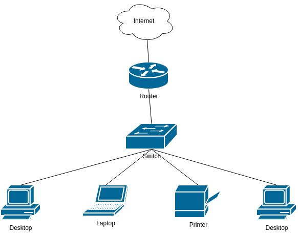
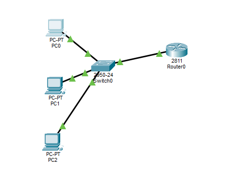

Red doméstica con NAT
Un hogar en Bogotá recibe una sola IP pública del proveedor; el router asigna IPs privadas (ej. 192.168.1.x) por DHCP a cada equipo y traduce todo el tráfico con NAT hacia Internet.
Universidad Antonio Nariño
Objeto Virtual de Aprendizaje · Asignatura Redes y comunicaciones
Sección 2
Las redes de computadores permiten la comunicación entre dispositivos y el intercambio de información. Para que esta comunicación sea posible, se utilizan dispositivos como los routers y sistemas de identificación como las direcciones IP. Estos elementos ayudan a que los datos lleguen desde un origen hasta el destino correcto.
Este Objeto Virtual de Aprendizaje (OVA) presenta los conceptos fundamentales de los routers y el direccionamiento IP mediante explicaciones, esquemas, recursos multimedia, un ejemplo aplicado y actividades de autoevaluación. Su propósito es que el estudiante comprenda cómo se identifican los dispositivos en una red y cómo se dirige el tráfico entre redes diferentes.
Sección 3
Al finalizar el recorrido, el estudiante estará en capacidad de… (marca cada objetivo cuando sientas que lo lograste)
0 de 5 objetivos marcados.
Sección 4
Explora el tema por pestañas. Cada una corresponde a una parte de la investigación técnica.
Una dirección IP es como la dirección de una casa, pero para los dispositivos: un número que identifica a cada celular, computador o televisor conectado a una red. Un router es el aparato que une varias redes y escoge por dónde mandar la información.
La IP dice para quién es la información y el router decide por qué camino llega. Es parecido a enviar una carta: la dirección va en el sobre y la empresa de correo escoge la ruta.
Sin direcciones IP los equipos no sabrían a quién hablarle, y sin routers cada red quedaría aislada. Gracias a los dos existe Internet, que en el fondo es muchas redes conectadas entre sí.
192.168.10.150. IPv6 tiene muchísimas más (unos 340 sextillones) y se ve así: 2001:db8::1./24) marca dónde termina una parte y empieza la otra.Mueve el control para cambiar el prefijo y observa qué bits son red y cuáles son host.
192.168.10.150 /24
| Criterio | Tipos |
|---|---|
| Versión | IPv4 e IPv6 |
| Alcance | Públicas (visibles en Internet) y privadas (10.0.0.0/8, 172.16.0.0/12, 192.168.0.0/16) |
| Asignación | Estáticas (fijas, manuales) y dinámicas (asignadas por DHCP) |
| Clases IPv4 (histórico) | A, B, C (hosts), D (multicast), E (experimental) |
| Forma de entrega | Unicast (una sola interfaz), anycast (un grupo, pero se entrega solo al miembro más cercano) y multicast; en IPv4 también existe broadcast |
El de casa u oficina pequeña; combina router, switch, punto de acceso Wi-Fi y a veces módem.
Conecta la red de la empresa con el proveedor de Internet.
Equipos de muy alta capacidad dentro de la red troncal de los proveedores.
Varios nodos que cubren un área grande con una sola red Wi-Fi.
Software que cumple la función de router en la nube o en servidores.
El administrador configura las rutas a mano y no cambian hasta que él mismo las actualice.
Las tablas se actualizan solas mediante protocolos de enrutamiento que calculan los caminos más cortos y rápidos. Los más comunes son RIP, OSPF, EIGRP (dentro de una organización) y BGP (entre proveedores en Internet).
Recorre paso a paso el viaje de un paquete. Usa los botones o haz clic en cada número.
Pasa el cursor o toca cada parte del router.
| Aspecto | IPv4 | IPv6 |
|---|---|---|
| Cantidad de direcciones | ~4.300 millones (agotadas) | Prácticamente ilimitadas |
| Legibilidad | Fácil de leer y recordar | Más larga y compleja |
| Compatibilidad | Universal, todo equipo lo soporta | Aún no universal; requiere doble pila |
| NAT | Necesario, complica la conectividad extremo a extremo | Elimina la necesidad de NAT y permite conectividad directa extremo a extremo |
| Autoconfiguración | Depende de DHCP | Autoconfiguración sin estado (SLAAC) |
| Multicast | Opcional | Forma parte de la especificación base |
💡 IPv6 es mejor técnicamente, pero IPv4 sigue vivo porque el NAT permite que una casa entera use una sola IP pública, y eso hizo que cambiar no fuera urgente.
| Estático | Dinámico | |
|---|---|---|
| ✅ Ventajas | Sencillo, seguro y no gasta recursos del router | Se adapta solo si un camino se cae y sirve para redes grandes |
| ⚠️ Desventajas | Si un camino falla no se arregla solo; imposible en redes grandes | Más complicado, gasta más recursos y necesita más seguridad |
Conectar celulares, computadores, televisores y dispositivos inteligentes a Internet.
Interconectar sedes, separar redes (administración, invitados, cámaras) y conectar con la nube.
Routers de núcleo y de borde que mueven el tráfico de millones de usuarios.
Cada teléfono recibe una IP; muchas operadoras ya usan IPv6 por defecto.
Routers virtuales y enrutamiento definido por software.
Sensores, cámaras y electrodomésticos que necesitan dirección propia.
Redes de campus, hospitales y plantas industriales.
Un hogar en Bogotá recibe una sola IP pública del proveedor; el router asigna IPs privadas (ej. 192.168.1.x) por DHCP a cada equipo y traduce todo el tráfico con NAT hacia Internet.
Según datos de Akamai, el 88,4% de la red de T-Mobile funciona sobre IPv6, frente al 74% de AT&T y el 74,8% de Verizon.
En 2026 el acceso a Google por IPv6 superó el 50%, con países líderes como Francia (73%), India (72%) y Arabia Saudita (65%), mientras otros como España (10%) siguen rezagados.
Haz clic en cada época de la línea de tiempo.
Según un rastreo de agosto de 2026 a más de 5,3 millones de sitios web, el 54,27% ya soporta IPv4 e IPv6 al mismo tiempo (doble pila). Sin embargo, la adopción es desigual: la medición de APNIC registra un 42% de capacidad IPv6 a nivel mundial. Lo normal hoy es la doble pila, y las redes solo IPv6 siguen siendo raras fuera de algunos operadores móviles y centros de datos.
En lugar de configurar a mano cada router, el tráfico se dirige mediante políticas de software que escogen el mejor camino (Internet, MPLS o LTE) según la congestión o la latencia.
Entre los impulsores del mercado SD-WAN hasta 2031 destacan la convergencia con el network slicing de 5G y la optimización de rutas con autocorrección basada en IA.
Los routers incorporan firewall, SASE y modelo zero trust; ya se habla de tráfico SD-WAN con cifrado poscuántico y orquestación gestionada desde la nube.
Sección 5


Video de apoyo: Qué es la IP privada, NAT y puerta de enlace — Curso de redes desde 0 (Cap. 2). Requiere conexión a Internet. Abrir en YouTube ↗
Escoge un destino y observa la decisión que toma PC 1 con su máscara, y el recorrido del paquete por la red.
Sección 6
Una pequeña empresa tiene tres computadores y necesita conectarlos para compartir información y tener acceso a Internet.
| Dispositivo | Dirección IP | Máscara | Gateway |
|---|---|---|---|
| Router | 192.168.1.1 | 255.255.255.0 | — |
| PC 1 | 192.168.1.10 | 255.255.255.0 | 192.168.1.1 |
| PC 2 | 192.168.1.11 | 255.255.255.0 | 192.168.1.1 |
| PC 3 | 192.168.1.12 | 255.255.255.0 | 192.168.1.1 |
Esta terminal simula el CMD del PC 1. Escribe ping 192.168.1.11 y presiona Enter. También puedes probar ipconfig, ping 192.168.1.1, ping 8.8.8.8, ping 192.168.1.50 o help.
Si aparecen respuestas, significa que el PC 1 puede comunicarse con el PC 2.
Sección 7
Clasifica cada dirección. Recuerda los rangos privados: 10.0.0.0/8, 172.16.0.0/12 (172.16.x.x – 172.31.x.x) y 192.168.0.0/16.
Lee cada afirmación sobre redes IP, NAT y enrutamiento y decide si es verdadera o falsa.
Aplica la máscara a las dos direcciones. Si la porción de red es igual, se comunican directamente; si no, necesitan el router.
Selecciona un concepto (izquierda) y luego su función (derecha).
Sección 8
Cuestionario de 12 preguntas con retroalimentación inmediata. Al responder verás si acertaste y por qué.
Sección 9
Aquí puedes revisar cada pregunta de la evaluación: tu respuesta, la respuesta correcta y la explicación de por qué es correcta o incorrecta.
Sección 10
Los routers y las direcciones IP son componentes esenciales para el funcionamiento de las redes: el router dirige los paquetes entre redes, mientras que las direcciones IP identifican a cada dispositivo para que los datos lleguen al destino correcto.
La máscara o prefijo determina qué parte de la IP corresponde a la red y cuál al equipo. Comprender la puerta de enlace, DHCP y NAT facilita el análisis de redes locales y de su conexión con Internet.
IPv6 resuelve el agotamiento de direcciones IPv4, pero la transición es gradual: hoy predomina la doble pila, porque el NAT permitió que IPv4 siguiera funcionando con una sola IP pública por hogar o empresa.
El uso de un OVA con imágenes, video, diagramas y actividades interactivas permite estudiar estos conceptos de manera activa; la práctica de configuración relaciona la teoría con situaciones reales y ayuda a comprobar el aprendizaje.
Sección 11
Puedes volver a cualquier sección desde el menú o repetir la evaluación para mejorar tu puntaje.